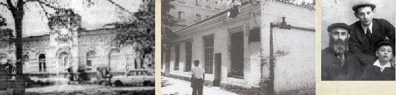

באוקראינה המזרחית, על גדול נהר הוורסקלה, סמוך למסילת הברזל חרקוב–קייב, לא הרחק מ
באוקראינה המזרחית, על גדול נהר הוורסקלה, סמוך למסילת הברזל חרקוב–קייב, לא הרחק מהאדיטש, שוכנת לה העיר פולטבה, עיר מרכזית המהווה גם עיר–מחוז. במשך השנים פיכו בפולטבה חיים יהודיים, עשירים בתוכן, כאשר בתקופת השיא הגיעו יהודיה לכדי עשרים וחמישה אחוזים מהאוכלוסיה הכללית בעיר.
באוקראינה המזרחית, על גדול נהר הוורסקלה, סמוך למסילת הברזל חרקוב–קייב, לא הרחק מהאדיטש, שוכנת לה העיר פולטבה, עיר מרכזית המהווה גם עיר–מחוז. במשך השנים פיכו בפולטבה חיים יהודיים, עשירים בתוכן, כאשר בתקופת השיא הגיעו יהודיה לכדי עשרים וחמישה אחוזים מהאוכלוסיה הכללית בעיר.

כבירת המחוז וכמרכז כלכלי חשוב, היוותה פולטבה גם את המרכז הרוחני של יהודי האזור, הן במוסדות החינוך היהודיים שהוקמו בה והן בסמכות לייצג את היהודים תושבי האזור מול השלטונות.
בתוך הקהילה היהודית התקיימו גם חיים חסידיים אותנטיים במשך מספר דורות. השורות הבאות יתעדו את סיפורה של הקהילה החסידית אשר אמנם הוכתה פעם אחר פעם על ידי הקומוניסטים או הנאצים ימ”ש, אך צאצאי החסידים מפולטבה החיים עמנו היום, מהווים עדות חיה ואותטנטית, כי החיות החסידית האותנטית של פולטבה עודנה חיה.
רב חסידי בעל שיעור קומה
קצת פחות משלוש–מאות אלף תושבים מתגוררים כיום בפולטבה. נקודות הציון ההיסטוריות של העיר, מתחילות על פי ההיסטוריונים, כבר לפני כ–1100 שנים, כאשר במשך השנים העיר ידעה עליות ומורדות, מלחמות ומאבקי–דם רבים.
רק לפני כמאתיים שנה, החלו יהודים רבים להתיישב בעיר, אשר היוו את הגרעין הראשוני של הקהילה היהודית. עם הזמן הלכה הקהילה והתרחבה, כאשר ברובה הייתה מורכבת מחסידי חב”ד. כך בתקופת מלחמת העולם הראשונה נמנו בה תשעה בתי כנסת חסידיים, ורק בית כנסת אחד של ה’מתנגדים’.
אחת הדמויות האציליות ששימשו כפאר הקהילה היהודית בפולטבה, הייתה דמותו של הגאון החסיד הרב יעקב מרדכי בזפלוב, מחשובי רבני חב”ד שכיהן כרב העיר. כשלושים שנה שימש כרב העיר, בנהלו את עדתו ביד רמה.
הרב בזפלוב היה מחשובי רבני חב”ד בדור הקודם וחסידם של אדמו”ר מהר”ש ואדמו”ר הרש”ב. עוד קודם נשיאותו של אדמו”ר הרש”ב, נחשב לאחד מידידיו הקרובים.
הרב בזפלוב נולד בי”ב באייר תרט”ו. הוא היה מחסידי אדמו”ר מהר”ש ונודע כלמדן וכ’עובד’. הוא היה אחד משלושת החסידים שזכו לקבל מידי אדמו”ר מהר”ש כתב סמיכה לרבנות בכתב יד קדשו.
אביו ר’ ניסן, היה אדם אמיד, ולמרות היותו חסיד חב”ד, לא היה שבע רצון מהעובדה שבנו התמסר לחלוטין לתורה ועבודה. פעם הגיע האב אל אדמו”ר מהר”ש ושאל בנימה של טרוניה: “מה יהיה בסופו של בני? האם נגזר עליו שיהיה ‘בטלן’?” השיב לו הרבי מהר”ש: אל תדאג, בעזרת השם הוא יהיה רב בעיר גדולה ויקבל משכורת שבועית של עשרים רובלים, עשרים חמישה רובלים, ואף יותר”.
נבואת הרבי המהר”ש התגשמה במדויק: כשהתקבל הרב בזפלוב לרבנות בעיר פולטבה בשנת תרמ”ו, הוקצבה לו משכורת שבועית של עשרים רובלים, סכום הגון באותם ימים. אחר כך הועלתה משכורתו לעשרים וחמישה רובלים, ובפעם השלישית הועלתה משכורתו לשלושים רובלים. אחיו שהתגורר בחרסון, היה עשיר מופלג וירא אלוקים. מדי פעם היה מציע לו תמיכה כספית גדולה, אולם הרב בזפלוב היה מסרב באומרו: “וכי חסר לי, חס ושלום, עבור ההוצאות שלי?”
הרב בזפלוב, ניהל את עדתו ביד רמה ופעל רבות למען ביצור חומות הכשרות בעיר. כרב עיר ניצבו בפניו אתגרים ומכשולים רבים, אך בחכמה רבה ובסייעתא דשמייא, התגבר והצליח לדלג עליהם. עם השנים קנה לעצמו שם של פוסק הלכות מפורסם. במקרים שונים שיגר לו הרבי הרש”ב שאלות הלכתיות כדי לקבל חוות דעתו.
הרב בזפלוב נהג להתפלל תמיד בניגון דביקות מלא רגש המרעיד את הנשמה. ניגון זה הפך לימים ל”ניגון מפולטבה” (ויש המכנים אותו בשם “ניגון לרב יעקב מרדכי מפולטבה”) והוא מופיע בספר הניגונים (ניגון מה).
השפעתו של הרב בזפלוב חרגה הרבה מעבר לגבולות עירו, ובעידוד הרבי הרש”ב, היה מעורב בעסקנות כלל–חב”דית ואף עסק רבות בעסקנות לטובת כלל יהודי רוסיה. בין היתר היה מראשי הלוחמים בתנועות הציונות וההשכלה.
לאחר פטירתו, והוא בן 60 בלבד, כתב הרבי הרש”ב לבני עירו: “זכרו נא את עבודתו אשר עבד אתכם יותר משלושים שנים, עבודה תמה, עבודה נאמנה ומסורה אל תכלית אמיתת כוונות הרבנות בקרב ישראל. לעיין ולפקח בכל פרט הנוגע אל הכשרות וטהרות הגוף והנפש ותיקן בזה תקנות גדולות, וכל דבר קטן או גדול לא עמד על צרכו זאת, וממש מסר את נפשו וגופו על זה, וכל משך השנים היותו כבוד במחניכם הייתם במנוחה אשר לא נתגעלתם חס ושלום גם בחששא דאיסורא רחמנא ליצלן”.
את מקומו מילא בתחילה בנו הרב שמואל בזפלוב, אך מפני סיבה שאינה ברורה, עזב את משרתו לאחר זמן קצר, ואדמו”ר הרש”ב עסק באיתור רב מתאים ליהודי פולטבה.
בשנת תרע”ח פנה אדמו”ר הרש”ב בהצעה לרב מנחם מענדל חן רבה של ניעז’ין כדי שיקבל את משרת רב העיר פולטבה. ההצעה הגיעה באמצעות אגרת ומברק, והרב חן השיב: “דברי קדשו קדושים המה לי ומוכן הנני בלי נדר לקיים כעצתו הקדושה”. והוא ממשיך וכותב כי אכן גם לדעתו בחסד ה’ תהיה בזה תועלת להרמת רוח החסידות והתורה בפולטבה, אך יש לו גם הרהורים אחרים עליהם כתב בחורף שעבר. הרב חן ביקש את ברכת הרבי, וסיפר כי קיבל מאנשי פולטבה מכתב בו הם דורשים את הסכמתו לכהן ברבנות.
לא ידוע לנו מה אירע בתקופה הבאה, אך בפועל, מי שהתמנה לבסוף לרבה של פולטבה, היה הרב דובער גרינפרעס, שבצעירותו למד בליובאוויטש, והוא מילא את מקומו של הרב בזפלוב.
עיר מחליפה ידיים
מרתקים הם זיכרונותיו של הרב מיכאל ליפסקר, שנולד ביישוב קטן ליד פולטבה אך את שנות ילדותו עשה עם משפחתו בעיר עצמה, בה התגורר שנים רבות. וכך הוא מתאר–מצייר את החיים היהודיים–חסידיים בפולטבה:
“בפולטבה היו כמה בתי כנסת, הגדול ‘די כאר שוהל’, שם כיהן ברבנות הרב אליהו עקיבא רבינוביץ’ [רב ותלמיד חכם, ועורך שני עיתונים: ‘המודיע פולטבה’, וה’פלס’], בעיקר היו מתפללים שם המתנגדים. די ‘באלניצר’ שול, אולי היה נקרא כן בגלל היותו קרוב לבית החולים - באלניצה ברוסית הוא בית החולים, שם היו מתפללים החסידים [בו שכנה ישיבת תומכי תמימים - ש.ז.ב.], די סולדאטקה שול (בית כנסת החיילים) שם היה אבא - הרב חיים צבי ליפסקר - הרב. “כשגדלנו קצת, למדנו אני ויעקב אחי בתלמוד תורה של העיר אצל ר’ אברהם בער המלמד, כך היה מכונה המלמד החסידי ואחינו ר’ אריה לייב למד בישיבה שהיתה בעיר, מכונה בשם ‘מירער ישיבה’ [ישיבת מיר המפורסמת, שגלתה בגין המלחמה לפולטבה]”.
בשנת תרנ”א עלתה על הפרק הצעה על ידי כמה חסידים, שאדמו”ר הרש”ב יעתיק את מקום מגוריו מליובאוויטש לאחד ממקומות ריכוזי החסידים ויקבל שם על עצמו באופן רשמי את נשיאות חב”ד. ההצעות שעמדו על הפרק היו קרמנצ’וג פולטבה וצ’רניגוב, בפועל, הרבי הרש”ב לא קיבל את ההצעה ונשאר בליובאוויטש, ורק שלוש שנים מאוחר יותר קיבל על עצמו את הנשיאות באופן מלא. אולם ההצעה להביא את אדמו”ר הרש”ב לפולטבה, מעידה על הריכוז הגבוה של החסידים באזור, והחשיבות של קהילה זו מהבחינה החב”דית.
עננים שחורים כיסו את שמיה של יהדות רוסיה בשלהי שנת תרע”ד, עם פרוץ מלחמת העולם הראשונה במהלכה הופל שלטון הצאר ובמקומו קמה ממשלה דמוקרטית שהחזיקה זמן קצר, עד שהודחה על ידי הקומוניסטים. רוסיה כולה גלשה למלחמת אזרחים אכזרית שנמשכה מספר שנים. וכך ממשיך הרב ליפסקר לתאר את הקהילה החסידית בפולטבה בעיצומה של המהפכה:
“שנות מלחמת העולם הראשונה עברו עלינו בפולטבה מלאים דאגה ופחד. המהפכות והשערוריה ששררה בשנים 1918–1920 [תרע”ח–תר”פ], אין לתאר. החילופים והתמורות של הכנופיות היו לעשרות [עשרות פעמים התחלף השלטון בעיר, ואלו שמות הקבוצות ששלטו בפולטבה בימי המלחמה והמהפכה הקומוניסטית - ש.ז.ב.]: האדומים, הלבנים, בולשביקים, מנשויקים, פטליורא, קוזקים ועוד. העיר נכבשת מכנופיה אחת ואחר כך מאחרת, והיו חילופים ותמורות כל שבוע, ולפעמים מספר פעמים ביום אחד”.
ר’ מיכאל ממשיך ומתאר בזיכרונותיו את תלאות המלחמה. כאשר חזר השקט לזמן–מה, נסעו הוא ואחיו ללמוד בישיבות “תומכי תמימים” המחתרתיות.
הצלה ברגע האחרון
ניסן תרע”ח. מלחמת האזרחים בעיצומה והתמימים יצאו קבוצות–קבוצות, מהעיירה ליובאוויטש נוכח התקרבותו של הצבא הגרמני. חלק מהיוצאים מליובאוויטש, נסעו לקרמנצ’וג, לשם עברו רבים מתלמידי הישיבה. חלק מהתמימים נסעו דרך פולטבה, שם נעצרו בחשד לריגול.
בקבוצה שמנתה שנים–עשר תמימים, היה גם התמים זלמן בירנבוים מפולין, שחבש כובע קטן כפי שנהוג לחבוש בארץ מוצאו. כאשר נעצרה הרכבת בתחנת פולטבה, ירד בריצה מהרכבת אל התחנה כדי להשיג אוכל או שתיה בטרם תמשיך הרכבת במסעה. לבושו הפולני והתנהגותו כפולני, העלתה חשד, ויחד עם כל הקבוצה נעצרו על ידי הבולשביקים ששלטו באותם ימים בפולטבה. עדי ראיה למעצר, ראו כיצד מובילים את העצורים בשעת לילה לקרון מרוחק מהתחנה, ולאחר זמן נשמעו יריות. היה נראה כי כולם הוצאו להורג!
למחרת הגיעו כמה אנשים מפולטבה לקרמנצ’וג וסיפרו כי בתחנת פולטבה הוצאו להורג שנים–עשר מתלמידי ישיבת ‘תומכי תמימים’ בליובאוויטש. שניים מהתמימים שהיו בקרמנצ’וג - הרב ישראל ג’ייקובסון והרב יחזקאל פייגין, החליטו לפעול כדי לדעת מה עלה בגורל התמימים.
הגביר הרב צבי גורארי’, שהיה בעל קשרים רבים בצמרת הצבא, טילפן אל מפקד הצבא בפולטבה, והלה העיד כי הבחורים עודם בין החיים. הרב גורארי’ הפציר בו שלא יהרגום, ובתוך זמן קצר יבואו מקרמנצ’וג להעיד כי הם אינם מרגלים.
בגין המלחמה לא נסעו רכבות מפולטבה לקרמנצ’וג, מה שהקשה על ההגעה המהירה ליעד. הזמן היה דחוק והרב גורארי’ השיג אישור מיוחד לתמים מרדכי אהרן פרידמן, שנסע ברכבת צבאית עד פולטבה. מיד עם הגיעו לעיר, סר למשרדי הצבא, שם נאמר לו כי אם רבני העיר יחתמו ערבות בעדם שיבואו למשפט, אזי ישוחררו מידית. מרדכי אהרן לא התמהמה, והחתים את הרב דובער גרינפרעס רב העיר, והרב אליהו עקיבא רבינוביץ. עם מכתב הערבות שב אל משרדי הצבא, והתמימים שוחררו, ביניהם היו הרב אברהם אליהו אקסלרוד - לימים רבה של בולטימור והרב יהושע אייזיק בארוך, לימים משפיע וראש הקהילה החב”דית בקובנה.
מספר שעות חלפו משחרורם, והבולשביקים נסוגו מהעיר מפני הגרמנים שנכנסו בשערי פולטבה. הרב ישראל ג’ייקובסון מתאר זאת בזכרונותיו וקובע כי היה זה נס גדול; “אם היו התמימים נותרים בידי הבולשביקים בזמן נסיגתם, קשה לתאר מה היה קורה”…
חסידי פולטבה מתקשרים לאדמו”ר הריי”צ
בעקבות הסתלקותו של כ”ק אדמו”ר הרש”ב בב’ ניסן תר”פ, שיגרו חסידי פולטבה כתב התקשרות לאדמו”ר הריי”צ. ביום הראשון של חול המועד פסח נחתם כתב ההתקשרות על ידי רבה של פולטבה, הרב דובער גרינפרעס ועמו חסידים מפולטבה, אליהם הצטרפו גם חסידים מחוץ לעיר. יחד הפצירו באדמו”ר הריי”צ לקבל את הנשיאות במקום אביו. הנה סיום כתב ההתקשרות:
“מעתירים ומפצירים אנחנו את כק”ת [כבוד קדושת תורתו] בכל לב ונפש ומאד, יהי נא חסדם לנחמנו גם אתנו, ובזאת נתנחם, יטו נא ידיהם ויפרשו כנשר כנפיהם עלינו לנהל אתנו על מי מנוחות, מים חיים הנבעים ממקור קדש אבותיהם אדמו”ר הקדושים כו’ נ”ע, ימלאו נא כסא אדמו”ר נבג”מ בכל מכל כל, ובעצת כ”ק ינחנו יפליאו עצה יגדילו תושיה ברוחניות וגשמיות, בל ירתק חלילה חבל הכסף שלשלת היוחסין, ובל יתעו ויטעו חלילה עדת אנ”ש כצאן בלי רועה, ויגיעת אדמו”ר נבג”מ ומסירת נפשו הטהורה על כל צעד וצעד על הכלל ועל הפרט בל תהיה לריק ובל ילד לבהלה.
“וזכות אבותיהם האדמו”רים וזכות כ”ת וזכות הצבור חוט המשולש הזה יפיח ויוסף בקרבם רוח טהרה וקדושה להורות את עדת אנ”ש בחב”ד את הדרך ילכו בה ברוחניות וגשמיות. ואנחנו הננו מקבלים עלינו עול כק”ת לשמוע ללמוד ולעשות את כל דברי כק”ת, ונקוה כי כאשר היה ה’ עם אדמו”ר נבג”מ ואבותיהם האדמו”רים הק’ נ”ע כן יהיה גם עם כק”ת, ובכל אשר יפנו ישכילו ויצליחו עד ינון שם גואלנו במהרה בימינו אמן”.
ראשון החותמים - רב העיר הרב דובער גרינפערס ואחריו חותמים גם: השוחט הרב שמואל דאברוסקין, השוחט הרב פנחס שרייבר, הרב משה חיים דובראווסקי, הרב חיים צבי הירש קוניקוב רב בקובילאק ליד פולטבה, הרב שניאור זלמן חוסידוב, ועוד [אגרות קודש אדמו”ר הריי”צ חט”ז ע’ תטו–תיז].
“תומכי תמימים” במרתף
עם תחילת השלטון הקומוניסטי, החלו רדיפות נגד הישיבות באשר הן. בחודש אייר תרפ”א סגרו הקומוניסטים את ישיבת ‘תומכי תמימים’ ברוסטוב והתמימים גורשו מהעיר. בימים הבאים נדדו התמימים למיקומה החדש של הישיבה - פולטבה. בחודשים הבאים הגיעו לפולטבה עוד תמימים ממקומות שונים. משפיעי הישיבה בפולטבה היו הרב שמואל לייב לוין והרב יחזקאל פייגין, כאשר בראשות הישיבה עמד הרב יהודה עבער. מי שטרח סביב גשמיות הישיבה, היה החסיד הישיש הרב שלמה איטקין, תושב פולטבה.
הישיבה שכנה במרתף בית הכנסת חב”ד “באלניצה” (כנראה על שם מרכז רפואי שהיה בסמוך). בעקבות המלחמה והמהפכה התדרדר המצב הכלכלי ברוסיה לשפל, אך חסידי פולטבה עשו ככל אשר יכלו כדי לדאוג לתנאים גשמיים סבירים עבור התמימים. למרות זאת, הקושי היה עצום ורבים מהתמימים נאלצו לישון על שולחנות וספסלים. למרות זאת, השמחה והאהבה והאחוה היתה נסוכה על פניהם, והם עסקו בתורה ובעבודה מבלי הבט על המצב הגשמי.
הנהלת הישיבה פעלה בדרכים שונות כדי להשיג תקציב הולם לישיבה; בין היתר שיגרה מכתבים דחופים למדינות שונות כדי להשיג תרומות שיעזרו לבסס את מצב הישיבה.
אדמו”ר הריי”צ, נשיא הישיבה, דאג לסייע לישיבה בפולטבה, ועודד את התלמידים כמו גם את החסידים תושבי פולטבה שעשו הכל למען קיומה של הישיבה. באותם ימים שיגר הרבי מכתב מיוחד לתמימים, ועודדם נוכח הרדיפות שהם חווים, ומורה להם לשקוד בלימוד התורה ולעסוק בעבודת התפילה, כשהוא מסיים את מכתבו בברכות מיוחדות: “א–ל הוי’ צבאות אדון כל הארץ יאיר אורו עליכם להגן עליכם ולהאיר פניו אליכם להצליחכם בלימוד ובעבודה. רק אחת התחזקו בכל עוז תעצומות כחכם באתערותא דלתתא בכל תוקף עוז וכח שכלכם איש את רעהו יעזרהו להתחבר ולהתאחד להיות כאחדים ממש וכולכם כאחד להיות כלי אל הברכה האלקית ובהצלחה בלתי מוגבלת” (אגרות קודש אדמו”ר הריי”צ ח”א אגרת פו).
ואילו לחסידים תושבי העיר, שיגר הרבי מכתב בו הוא מודה להם על פועלם הטוב למען הישיבה: “אשריכם עם הקודש שכך עלתה לכם, התחזקו והחזיקו במאור התורה בטהרה, והשתדלו בכל עוז כוחכם להחזיק הת”ת והחדרים במלמדים טובים וישרים בסדר מסודר בלימוד בשקידה ובהשגחה מעולה” (אגרות קודש אדמו”ר הריי”צ ח”א אגרת פח).
הרב מיכאל יהודה לייב הכהן, מתלמידי הישיבה בעת ההיא, סיפר בזיכרונותיו, על הישיבה: “למדו בשקידה עצומה נגלה ודא”ח, ומספר גדול של תלמידים התפללו באריכות. לעיתים קרובות מאוד התוועדו עם המשפיע הרה”ח ר’ יחזקאל פייגין, וכמו כן התלמידים בינם לבין עצמם. תלמידים אחדים גם נסעו לרוסטוב לאדמו”ר לשאול עצתו בעבודת השי”ת, וכל אחד מהתלמידים היה חוזר דא”ח בשבת אחר תפילת מנחה. האהבה והאחוה בין אחד לחבירו אין לתאר ממש כמו אחים בני אב אחד, כל אחד דואג ומתעניין במצבו של חבירו”.
בערב פסח פשטו הקלגסים על הישיבה
במשך שנתיים פעלה הישיבה בפולטבה, עד לחודש ניסן תרפ”ג, כאשר אנשי המשטרה החשאית הגיעו אל הישיבה לפני חג הפסח. באותה שעה הכינו התלמידים יין בכוחות עצמם, והמצה שמורה שאפו כבר היתה תלויה על תקרת הישיבה. בגלל חוסר מקום, קנו התלמידים סלים קלועים, ותלו אותם עם המצות על התקרה. אל הישיבה הגיעו שמועות שהצ’קא (המשטרה החשאית) שמה עין על הישיבה. בשל כך ננקטו אמצעי זהירות כמו בכתיבת מכתבים. יש הסוברים כי ההלשנה באה מצד בנה של הטבחית בישיבה, שהיה אדם רע ופראי בהליכותיו.
יומיים או שלושה לפני הפסח הוטל לפתע מצור על הישיבה. שוטרים, חברי היבסציה ובלשים בראשות המפקד טייטיל, הקיפו את חצר הישיבה, והחלו בחיפוש מדוקדק. ידם של הרשעים פשפשה בכל חור, נגעה במצות שהכעיסו אותם במיוחד (כפי שעולה מידיעה שפורסמה לאחר מכן בעיתון המקומי). למרבה הנס, ידם לא נגעה ביין…
לאחר החיפוש נפתחה חקירה אינטנסיבית. כל תלמידי הישיבה נחקרו מי המנהל, מי המלמד, ועוד שאלות מטרידות. התלמידים שכבר התכוננו מראש, ענו פה אחד כי אין להם מנהל, וכי הם לומדים בכוחות עצמם ומתקיימים ממה ששולחים להם מבתיהם. התשובות לא מצאו חן בעיני הרשעים, אשר איימו וצעקו, והמשיכו לחפש אחר ראשי הישיבה, עד שמצאו צעירים שגילם פחות מ–18. הללו רשמו את שמותיהם והתרו בהם לעזוב את פולטבה בתוך שלושה ימים.
הפחד היה גדול, בפרט שהיה זה בדיוק לפני חג הפסח. לאחר מחשבה נוספת, הבינו התמימים כי הישיבה לא תוכל לפעול יותר בפולטבה, ולכן התלמידים הצעירים נסעו בשתי קבוצות לחרקוב ולקרמנצ’וג שם כבר היתה קיימת ישיבה בהנהלתו של הרב ישראל נח בליניצקי. גם שאר התלמידים עזבו את העיר והסתדרו בסניפי ישיבות ‘תומכי תמימים’ שהוקמו במקומות חלופיים. כשאנשי המשטרה החשאית גילו כי המנהל הכספי הוא ר’ שלמה איטקין, אסרוהו ודרשו ממנו למסור את ספרי החשבונות. הוא ישב במעצר עד חג הפסח, ושוחרר לבסוף עד ליום משפטו ובנס מופלא יצא לבסוף זכאי.
בין התלמידים שלמדו בישיבה באותה תקופה: הרב זלמן שמעון דבורקין, הרב יהודה חיטריק, הרב יהושע קארף, הרב דוד לייב מרוזוב, הרב פישל דמיחובסקי, הרב אברהם דריזין, הרב בן ציון שם טוב, ועוד רבים.
יהדות פולטבה הולכת ומתמעטת
במשך מספר שנים, היה בפולטבה בית הוצאה לאור בו הודפסו על ידי הרב חיים מאיר היילמן והרב חיים אליעזר ביחובסקי מספר ספרי חסידות, ביניהם הספר ‘יהל אור’ על התהילים ו’דרך מצוותיך’ של אדמו”ר הצמח צדק, פלח הרימון של ר’ הלל מפאריטש.
בעקבות רדיפות הק.ג.ב. לא יכלו אנשי הקהילה להתפלל במניין בבתי הכנסת, וקיימו מניינים מחתרתיים בביתו של ר’ פנחס שרייבר.
בשנים הבאות הלכו הרדיפות מצד השלטונות וגברו. בשנת תר”צ סגרו השלטונות את בית הכנסת הגדול בפולטבה כמו גם את בית הכנסת חב”ד “בלניצה”, בו שכנה בעבר ישיבת ‘תומכי תמימים’. באותן שנים קשות, נעצרו חסידים ונאסרו שוב ושוב, אך לא נותר תיעוד מסודר מהנעשה באותם ימים בפולטבה. ובכל זאת, הנה מספר שביבי מידע:
בספר “יהודים ויהדות בברית המועצות” מסופר על מאסרים בקרב החסידים שהתגוררו בפולטבה בשנת תרצ”ז. בספר “המשפיע שלא חזר” מסופר, כי בגל המאסרים הגדול ברחבי אוקראינה בחודש אדר תרצ”ט, נערכו גם מאסרים בפולטבה.
מאידך, כאשר ביקשו הקומוניסטים להגלות את המשפיע הנודע הרב שלמה חיים קסלמן, הם שלחו אותו לפולטבה במטרה להרחיקו ממקום הפעילות שלו. במשך שלוש שנים שהה בפולטבה, אז התארח בבית משפחת הרב אריה זאב ליפסקר. הוא אף עמד בקשר מיוחד עם משפחת ר’ שמואל מנחם קליין, מחסידי חב”ד בעיר.
דווקא בשנים אלו, כאשר הרדיפות גברו, הוקם מחדש סניף של ‘תומכי תמימים’ בפולטבה. בסניף זה למדו תלמידים מעטים. בספר “תולדות חב”ד ברוסיה”, מביא שביבי זכרונות של תלמידים שלמדו בישיבה בשנים תרצ”ה–תרצ”ו.
הרדיפות והרעב הגדול ששררו באוקראינה באותן שנים, גרמו לחסידים לעבור להתגורר בערים הגדולות ברוסיה, וכך הקהילה החב”דית הלכה והידלדלה. בתקופה שלפני מלחמת העולם השניה, התגוררו בפולטבה כ–13,000 כעשרה אחוזים מכלל האוכלוסיה. עם פלישת גרמניה לרוסיה בקיץ תש”א, החלו יהודי פולטבה לברוח הרחק מאימת החזית. בכ”ז באלול תש”א כבשו הנאצים את העיר. יהודיה נדרשו לענוד טלאי עם מגן דוד ואף גויסו לעבודות כפייה. במפקדים שנערכו בין היהודים באותם ימים התברר כי רוב יהודי פולטבה הצליחו לברוח טרם כניסת הנאצים לעיר.
עם הזמן הוצאו שארית יהודי פולטבה להורג על ידי הנאצים ימ”ש, חלקם בתחילת חודש תשרי תש”ב, וחלקם בתחילת מר חשון. בית כנסת בלניצה בו שכנה הישיבה, נהרס ונשרף על ידי הנאצים, ונותר רק הקיר החיצוני הפונה לרחוב. לאחר המלחמה שוחזר חלק מהמבנה ששימש בתחילה כגן ילדים ואחר כך הפך למפעל. בשנים הבאות נהרס לטובת שוק שהוקם במקום. כיום לא נותר זכר לבית כנסת או לישיבה, מלבד אזכורים קצרים בסקירות היסטוריות על העיר פולטבה.
פריחה מחודשת
קומוניסטים, נאצים ושוב שלטו הקומוניסטים בעיר עוד עשרות שנים, עד לפרסטרויקה בסוף שנות המ”ם. במשך הזמן הגיעו לפולטבה שלוחי הרבי מה”מ, הרב יוסף יצחק ומרת נחמה סגל. כמה נאה היא סגירת המעגל, באשר השליחה היא בת למשפחת ליפסקר שהייתה מעמודי התווך של קהילת חב”ד בפולטבה.
הבחור שהתעכב בתחנת הרכבת
לצד התמימים שהגיעו מרוסטוב לישיבה בפולטבה, הצטרף בחור לא–חב”די בשם שמואל מנחם קליין. הוא התגורר בגליציה, אך במהלך המלחמה, כאשר רוסיה כבשה את גליציה, הוגלה לסיביר יחד עם בני משפחתו. עם תום המלחמה הותר להם לשוב לביתם, ובדרך עצרו בתחנת הרכבת בפולטבה. כאן נפגש עם חסידי חב”ד שבדיוק שהו במקום, ואלו דיברו על ליבו להישאר ללמוד בישיבת ‘תומכי תמימים’ המקומית. לאחר התלבטות, וגם בגלל חששו לשוב לביתו מפאת סכנת הגיוס, נותר שמואל מנחם בפולטבה בעוד משפחתו ממשיכה לגליציה.
לאחר תקופה קצרה של לימודים בישיבה, החל לעבוד לפרנסתו במפעל שייצר שמן חמניות, בניהולו של הרב שניאור זלמן חוסידוב, מחשובי החסידים בפולטבה. ר’ שמואל מנחם למד במהירות את העבודה, הפך למנהל עבודה, ובד בבד נעשה בן בית אצל הרב החסיד שואל משה חוסידוב מחשובי החסידים בעיר.
בשנת תרפ”ב פרצה בעיר מגיפת טיפוס, ומנהל המפעל הרב שניאור זלמן חוסידוב נדבק במחלה, ובד’ בסיון נפטר. לאחר מספר חודשים הציעו לר’ שמואל מנחם נכבדות את מרת מרים, בתו של ר’ שניאור זלמן חוסידוב. בחודש כסלו תרפ”ג נערכה החתונה, והזוג הצעיר קבעו את מקום מגוריהם בפולטבה. בשנים הבאות נולדו להם בפולטבה שני בנים, זלמן ושואל משה.
הרעב הכבד ששרר באוקראינה בשנות הצ’, אילץ את ר’ שמואל מנחם קליין לעבור ללנינגרד. גם לאחר שעבר למקום החדש, לא שכח את אחיו הרעבים בפולטבה, והיה שולח להם צנימים כדי להחיות את נפשם ברעב הגדול, כפי שסיפר בנו ר’ זלמן:
מקורות: אגרות קודש ושיחות רבותינו נשיאינו, תולדות חב”ד ברוסיה הסובייטית, זכרון לבני ישראל, אבני חן, לב הארי, המשפיע (קסלמן), חסיד ללא פעמונים, ארבעה חסידים, תולדות חב”ד בפטרבורג, המשפיע שלא חזר, תכתב זאת (ליפסקר), האיש של הרבי בערד, דור ודור, המודיע–פולטבה, האח, בית משיח, כפר חב”ד, ארכיון הרב יהושע מונדשיין, יד ושם, תשורה פרוס תשס”ה, ראיונות אישיים ועוד.